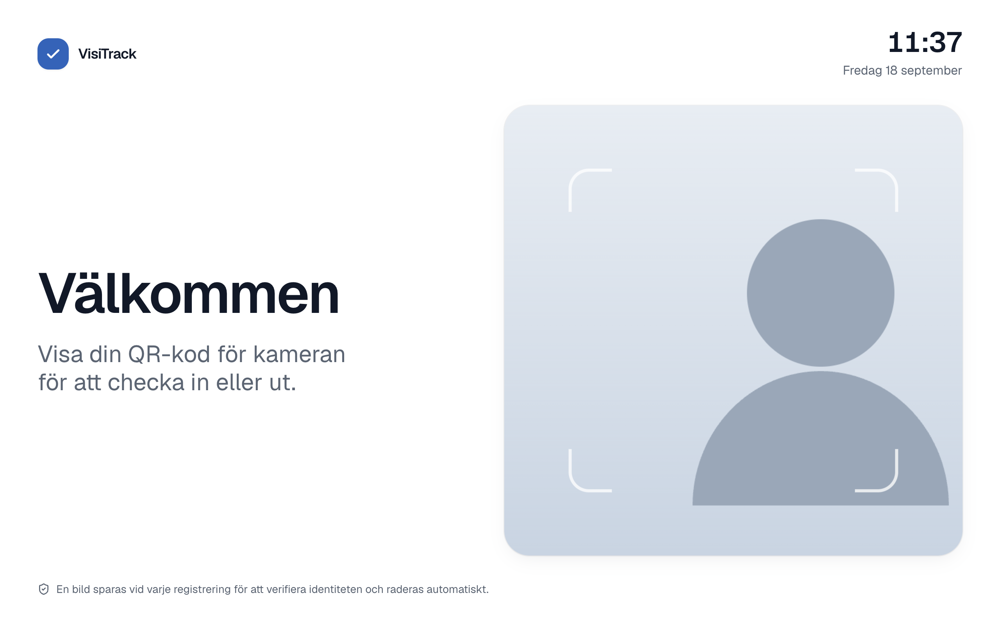
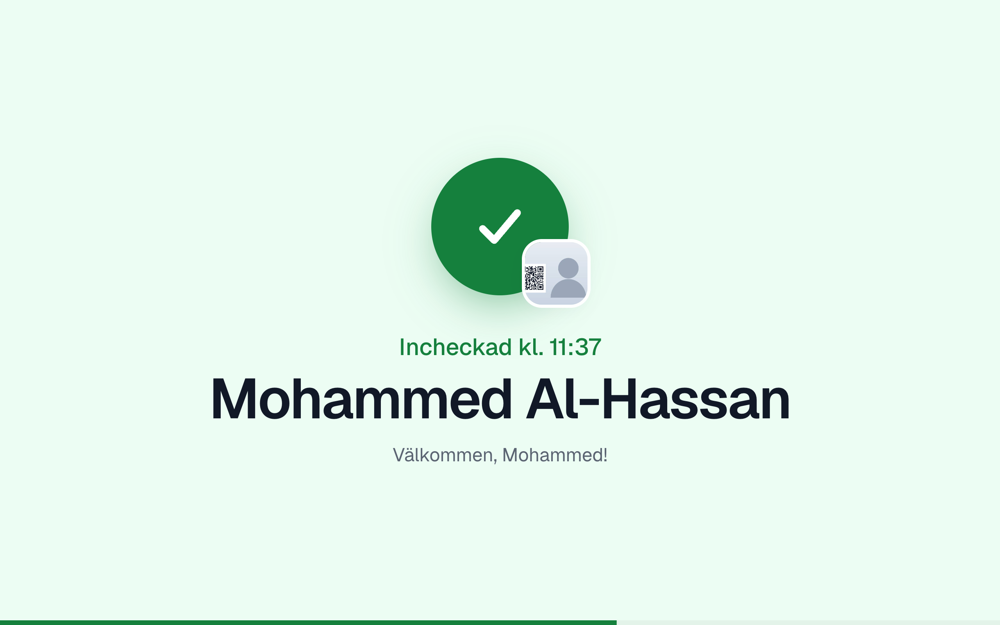
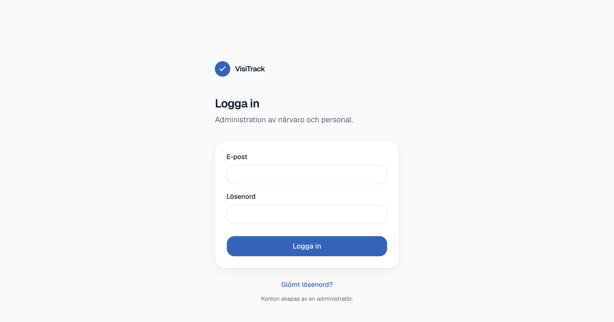
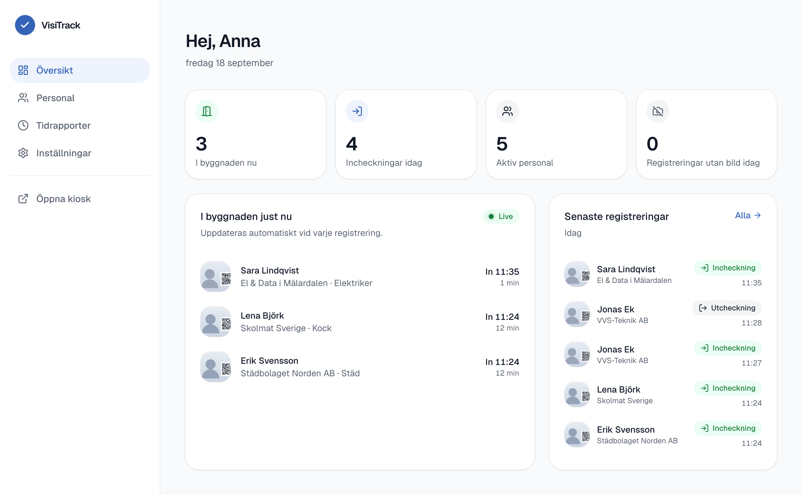
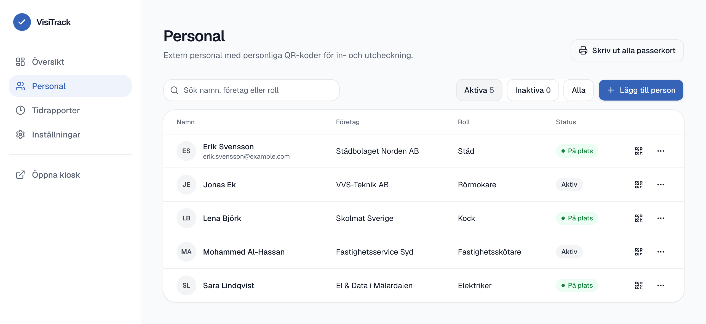
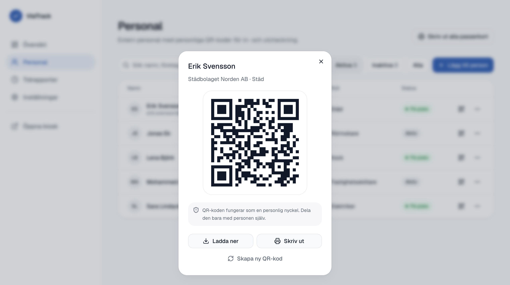
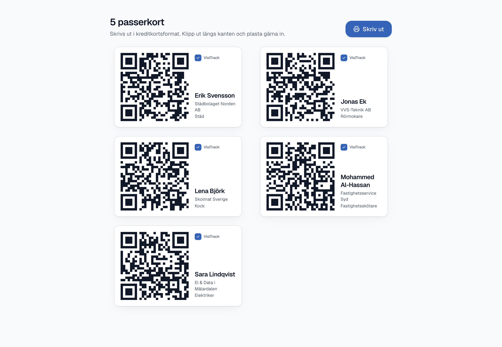
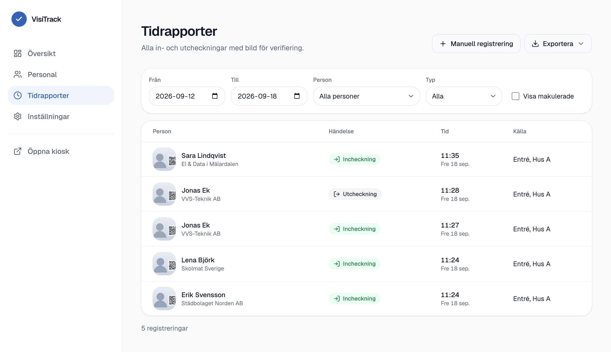
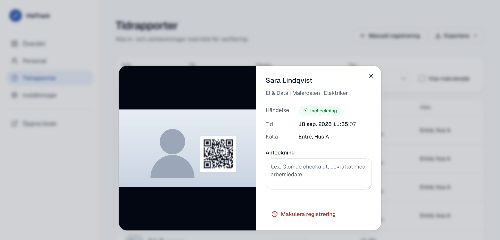
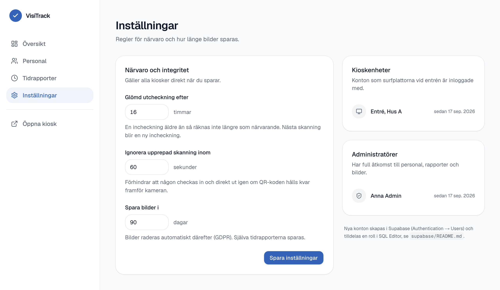

Manual för närvaro och tidrapportering för extern personal – kiosk, administration och rapporter.
Extern personal – städ, hantverkare, kök – checkar in och ut vid entrén genom att visa sin personliga QR-kod för en surfplatta. I samma ögonblick som koden läses tas en bild med surfplattans kamera. Bilden sparas tillsammans med tiden, så att du i efterhand kan se att rätt person använde koden.
| Del | Vad den används till |
|---|---|
Kiosken/kiosk |
Surfplattan vid entrén. Står alltid på och väntar på QR-koder. Ingen inloggning för personalen. |
Administrationen/admin |
Din del: närvaro i realtid, personal, QR-koder, tidrapporter, bilder och export. |
| Databasen | Allt sparas hos Supabase i Stockholm. Bilderna raderas automatiskt efter 90 dagar. |
Samma QR-kod används för både in- och utcheckning. Databasen håller reda på vad som är nästa steg och sätter tiden med serverns klocka. Ingen kan alltså checka in i efterhand eller välja tid själv.
Så här ser skärmen ut när den väntar på nästa person:


| Besked | Betydelse |
|---|---|
| Du är redan incheckad | Koden visades igen inom en minut. Ingen ny registrering görs – det är helt i sin ordning. |
| QR-koden känns inte igen | Koden är ersatt eller hör inte till VisiTrack. Kontakta receptionen för en ny kod. |
| Behörigheten är inaktiverad | Personen är avstängd i systemet, t.ex. efter avslutat uppdrag. |
| Något gick fel | Nätverket svarade inte. Försök igen om en stund. |
Personalen ska veta att en bild tas vid varje registrering och varför. Det står även på kioskskärmen. Se kapitel 11 om integritet.
Gå till visitrack-six.vercel.app/login och logga in med din e-postadress.
Konton skapas av en administratör – det går inte att registrera sig själv.

Vill du byta lösenord medan du är inloggad klickar du på ditt namn längst ned till vänster och väljer Byt lösenord under Mitt konto.

| Ruta | Vad den betyder |
|---|---|
| I byggnaden nu | Personer vars senaste registrering är en incheckning. |
| Incheckningar idag | Antal incheckningar sedan midnatt. |
| Aktiv personal | Personer med giltig QR-kod, oavsett om de är på plats. |
| Registreringar utan bild | Bör vara 0. Ett högre tal kan betyda att kameran är skymd eller att nätet krånglar. |
Märket Live visar att sidan har kontakt med databasen. Står det Frånkopplad saknas nätverk – uppgifterna kan då vara några minuter gamla.


Den som har koden kan checka in som personen. Dela den bara med personen själv. Om en kod kommer bort: öppna koden och välj Skapa ny QR-kod – den gamla slutar fungera omedelbart.
Skriv ut alla passerkort ger ett ark med kort i kreditkortsformat för all aktiv personal. Klipp ut och plasta gärna in.


Välj period med Från och Till, och filtrera på person eller typ. Klicka på en rad för att se hela bilden och detaljerna.

Registreringar från kiosken kan inte ändras – det är själva poängen med dem som underlag. Blev något fel gör du så här i stället:
Systemet sparar vem som gjorde vad och när.
Knappen Exportera följer de filter du valt och ger två filer att välja mellan:
| Fil | Innehåll |
|---|---|
| Arbetspass | En rad per pass: datum, namn, företag, in, ut och arbetad tid – både som 7:30 och 7,50 timmar. Pass utan utcheckning markeras. |
| Alla registreringar | Varje händelse för sig, med källa, bildstatus, makuleringar och anteckningar. Används för granskning. |
Filerna är anpassade för svenska Excel – de öppnas direkt med rätt kolumner och rätt bokstäver (å, ä, ö).

| Inställning | Betydelse | Standard |
|---|---|---|
| Glömd utcheckning efter | En incheckning som är äldre än så räknas inte längre som närvarande. Nästa skanning blir en ny incheckning. | 16 tim |
| Ignorera upprepad skanning | Hindrar att någon checkas in och direkt ut igen om koden hålls kvar framför kameran. | 60 sek |
| Spara bilder i | Efter denna tid raderas bilderna automatiskt. Tidrapporterna sparas. | 90 dagar |
På samma sida ser du vilka kioskenheter och administratörer som finns. Nya konton skapas i Supabase – se nästa kapitel.
Alla har ett eget konto – inloggningar ska aldrig delas. Det finns tre behörigheter:
| Kan | Administratör | Läsbehörighet | Kiosk |
|---|---|---|---|
| Se närvaro, personal och tidrapporter | Ja | Ja | Nej |
| Se bilderna | Ja | Ja | Nej |
| Exportera till Excel | Ja | Ja | Nej |
| Lägga till personal och QR-koder | Ja | Nej | Nej |
| Makulera och registrera manuellt | Ja | Nej | Nej |
| Ändra inställningar | Ja | Nej | Nej |
| Registrera skanningar | Nej | Nej | Ja |
Den ger full insyn i närvaro och rapporter men ingen möjlighet att ändra något – och QR-koderna är aldrig synliga.
select private.assign_role('namn@skola.se', 'admin', 'Förnamn Efternamn');admin mot viewer för läsbehörighet.
Ett konto utan behörighet kan logga in men ser ingenting. Så tas åtkomst bort igen: ta bort raden eller kontot.
visitrack-six.vercel.app/kiosk i Chrome, Edge eller Safari på surfplattan.kiosk@visitrack.se). Det görs en gång per enhet.Efter omstart eller strömavbrott startar kiosken själv igen – ingen behöver logga in på nytt. Placera plattan så att ansiktet syns i bild och undvik motljus från fönster bakom personen.
Håll fingret på VisiTrack-loggan uppe till vänster i två sekunder. Där kan du starta om kameran, växla helskärm eller logga ut enheten. Menyn är dold så att besökare inte råkar öppna den.
Bilderna är personuppgifter. VisiTrack är byggt för att samla in så lite som möjligt och radera automatiskt, men rutinerna runt omkring är skolans ansvar.
| Område | Så fungerar det |
|---|---|
| Var lagras uppgifterna? | Databas och bilder hos Supabase i Stockholm. Webbplatsen körs via Vercel i Stockholm. Inga uppgifter lämnar EU. |
| Hur länge? | Bilderna raderas automatiskt efter 90 dagar (kan ändras i Inställningar). Tidrapporterna sparas tills ni bestämmer annat. |
| Vem kan se bilderna? | Endast inloggade med administratörs- eller läsbehörighet. Bilderna ligger i ett privat utrymme och visas via länkar som slutar gälla efter tio minuter. |
| Vad sparas? | Namn, företag, roll, tider och en lågupplöst bild per registrering. Ingen ansiktsigenkänning och ingen spårning i övrigt. |
| Det här händer | Gör så här |
|---|---|
| ”Kameran är blockerad” | Tillåt kameran för sidan i webbläsarens inställningar och tryck Försök igen. |
| ”Ingen kamera hittades” | Kontrollera att kameran inte är övertäckt eller används av ett annat program. Starta om plattan. |
| Koden läses inte av | Torka av kameralinsen, undvik motljus och håll koden stilla en armlängd bort. Skrynkliga utskrifter kan behöva ersättas. |
| ”Ingen anslutning” | Kiosken saknar nät. Registreringar kan inte sparas under tiden – kontrollera wifi. |
| Någon glömde checka ut | Efter 16 timmar räknas personen inte längre som närvarande. Lägg in en manuell utcheckning med orsak om tiden ska stämma. |
| Registreringar utan bild | Titta på siffran i Översikt. Är den hög: kontrollera kamerans sikt och nätverket vid entrén. |
| Fel person på bilden | Makulera registreringen med orsak, och skapa en ny QR-kod till personen vars kod använts. |
| Inget mejl vid lösenordsbyte | Kontrollera skräpposten. Kommer inget: en administratör kan sätta ett tillfälligt lösenord i Supabase. |
Öppna Översikt: visar Live och rimliga siffror fungerar kedjan hela vägen från kiosken till databasen.